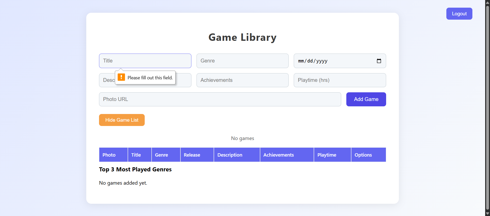
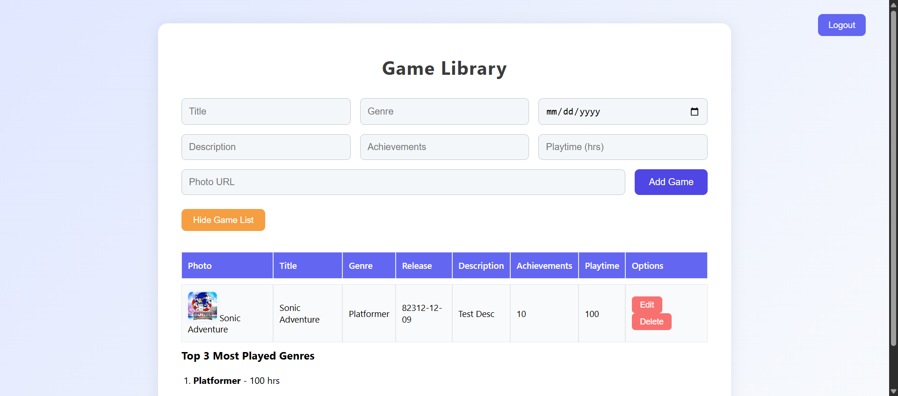
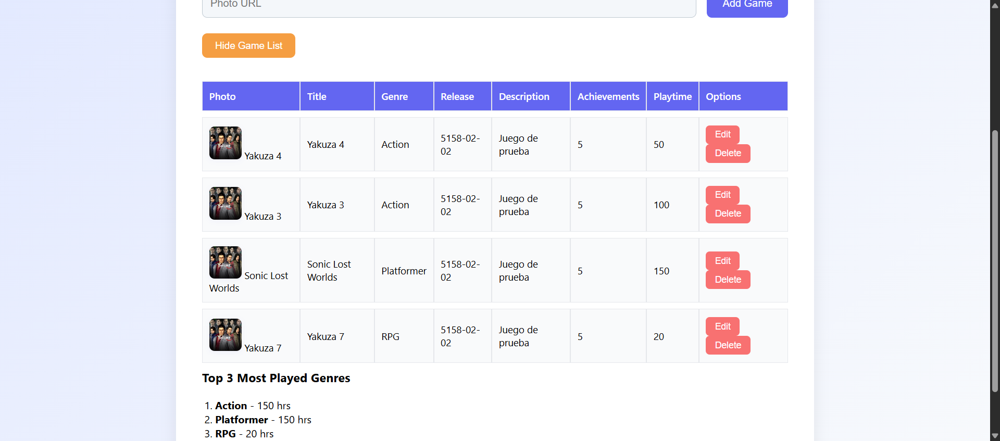

| Test | Status | Screenshot |
|---|
| Rejects incorrect credentials | PASS |  |
| Validates empty fields | FAIL | |
| Accepts correct credentials and redirects | PASS | |
| Session persists after reload | PASS |  |
| Logout clears session and redirects | PASS | |
| Login fields enforce 25-char limit | PASS | |
| Create validates required fields | PASS |  |
| Create validates numeric types | PASS |  |
| Create valid game | PASS |  |
| Read displays all stored games | PASS | |
| Update reflects immediately and persists | PASS |  |
| Delete is permanent and persists | PASS | |
| List loads and shows empty message | FAIL |  |
| Dashboard updates and calculates top 3 genres | FAIL |  |
| Data persists after reload | PASS |  |